Awesome Links
Neocities Websites (in buttons)
Other cool personal sites
Razorback - a site about old technology
Spriteclad - a site that is no longer being updated for some reason
The Most Amazing Website On The Internet - I saw this at one of Joel's videos (ususlly It's a stream but edited)
The World's Worst Website Ever - same as the previous one, but better!
Ladoved (Ладовед) - my favourite website that was hosted on Narod.ru
Azapru's Website - website that was made by my friend
Simone's Computer - a website that looks like a fictional OS
Useful Stuff
W3Schools - the most known source of all knowledge for web development
GifCities - a collection of GIFs from GeoCities
TIC-80 - a tool for creating 8-bit games with Lua and MoonScript
.is-a.dev - a free subdomain for devs and beyond
Neofeed - personal timeline for creating a microblog on Neocities or Github Pages
Other
Windows 93 - a Windows 95-like operating system with alot of funny stuff
Proton - a set of privacy-friendly alternative services to these that are owned by Google
EmuOS - another Windows 95-like website, only with stuff related to retro gaming
Winwap Portal - a web portal for mobile phones that is still alive (along with the Winwap Browser)


 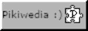
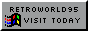
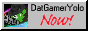
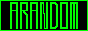
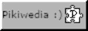
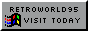
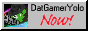
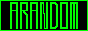


 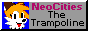
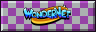
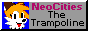
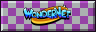

 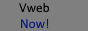
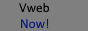
 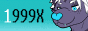
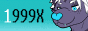


 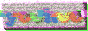
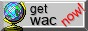
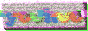
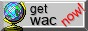